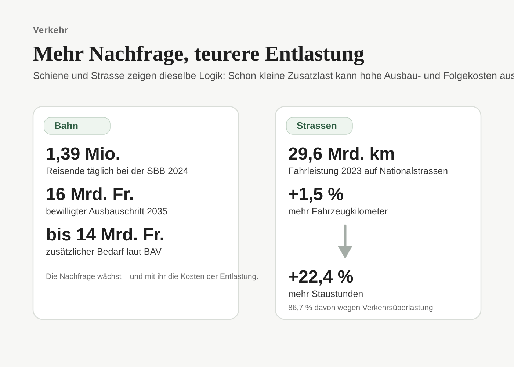
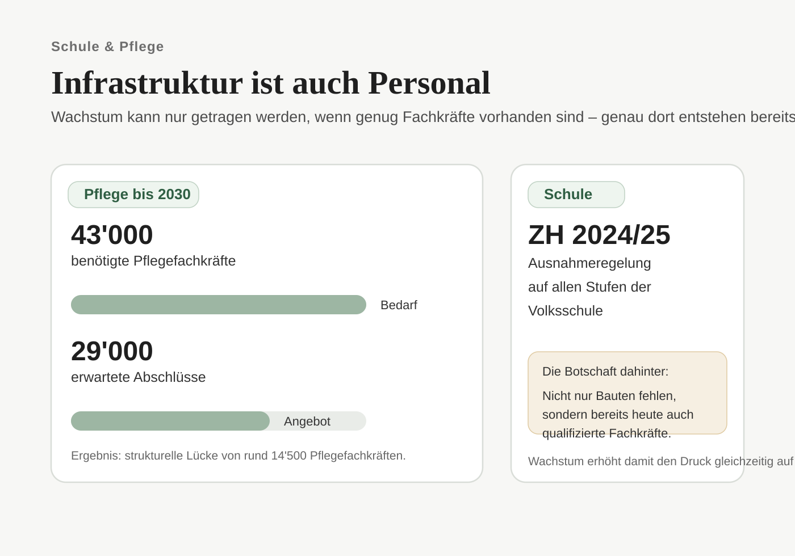

1. Die Reserven schrumpfen nicht nur an einem Ort – sondern gleichzeitig
Infrastrukturdruck entsteht selten schlagartig. Er wächst dort, wo Systeme noch funktionieren, aber immer weniger Reserve haben. Genau das ist in der Schweiz heute sichtbar.
Die Bahn verzeichnet Rekordnachfrage. Die Nationalstrassen produzieren immer mehr Staustunden, obwohl die Verkehrsleistung deutlich langsamer wächst. Schulen kämpfen mit Personalmangel und zusätzlichem Raumbedarf. Im Gesundheitswesen steigt der Bedarf gleichzeitig wegen Bevölkerungswachstum und Alterung. Und unterhalb der sichtbaren Oberfläche wachsen auch die Anforderungen an Leitungen, Netze und Versorgungssysteme.

2. Bahn: auf Wachstum ausgelegt – aber schon heute im Spitzenbetrieb
Noch nie waren so viele Menschen mit der SBB unterwegs wie 2024: täglich nutzten 1,39 Millionen Reisende die Züge. Auf stark belasteten Achsen wie Zürich–Winterthur, Bern–Zürich oder Lausanne–Genf ist die Kapazitätsfrage längst keine Theorie mehr, sondern tägliche Betriebsrealität.
Der Bund reagiert mit dem Ausbauschritt 2035. Für dieses Paket hat das Parlament rund 16 Milliarden Franken bewilligt. Doch selbst das reicht gemäss BAV nicht aus, um den geplanten Angebotssprung stabil und zukunftsfähig umzusetzen. Ende 2024 wurde auf Fachebene ein zusätzlicher Finanzbedarf von bis zu 14 Milliarden Franken für die nächsten rund 20 Jahre ausgewiesen.
| Kennzahl | Wert | Quelle / Jahr |
|---|---|---|
| Fahrgäste SBB täglich | 1,39 Mio. | SBB Geschäftsbericht 2024 |
| Ausbauschritt 2035 (bewilligt) | rund 16 Mrd. Franken | BAV / Parlament 2019/2023 |
| Zusätzlicher Bahnbedarf bis ~2045 | bis 14 Mrd. Franken | BAV, November 2024 |
| Engpasskorridore | Zürich–Winterthur, Bern–Zürich, Lausanne–Genf | BAV / SBB |
Das ist die eigentliche Botschaft: Je dichter das Angebot und je stärker die Nachfrage, desto teurer wird die Entlastung. Wachstum auf der Schiene ist möglich – aber nicht ohne weitere Milliardeninvestitionen.
3. Strassen: Rekordstau ist das Warnzeichen des Systems
Die Nationalstrassen machen nur einen kleinen Teil des gesamten Strassennetzes aus, tragen aber einen sehr grossen Teil der Verkehrsleistung. 2023 wurden dort 29,6 Milliarden Fahrzeugkilometer zurückgelegt, ein Plus von 1,5 Prozent gegenüber dem Vorjahr.
Entscheidend ist jedoch nicht nur die Fahrleistung, sondern die Reaktion des Systems: Im selben Jahr wurden 48'807 Staustunden registriert – ein Rekordwert und ein Anstieg von 22,4 Prozent. 86,7 Prozent dieser Staustunden gingen auf Verkehrsüberlastung zurück, nicht primär auf Unfälle oder Baustellen.
| Indikator | 2023 | Vergleich |
|---|---|---|
| Staustunden auf Nationalstrassen | 48'807 Stunden | Neuer Rekordwert |
| Davon durch Verkehrsüberlastung | 86,7 % | Nicht Unfälle, nicht Baustellen |
| Jahresveränderung Staustunden | +22,4 % | vs. +1,5 % Fahrzeugkilometer |
| Fahrzeugkilometer total 2023 | 29,6 Mrd. km | +1,5 % ggü. 2022 |
Diese Schere ist das Warnsignal: Wenn eine moderate Verkehrszunahme zu einer massiv überproportionalen Zunahme der Stauzeit führt, zeigt das ein Netz, das seine Puffer verliert.
4. Infrastruktur ist auch Personal: Schule und Pflege als Engpassfelder
Infrastruktur besteht nicht nur aus Beton, Schienen und Asphalt. Sie besteht auch aus genügend Menschen, die Systeme betreiben.
Schule: Der Lehrpersonenmangel ist in der Schweiz kein Randphänomen mehr. Für das Schuljahr 2024/25 hat das Volksschulamt des Kantons Zürich auf allen Stufen der Volksschule eine Ausnahmeregelung erlassen, damit Schulen auch Personen ohne vollständiges Lehrdiplom anstellen können. Das zeigt: Wo Schülerzahlen steigen und der Arbeitsmarkt angespannt ist, geraten die Systeme nicht erst beim Schulhausbau, sondern schon bei der Personalbesetzung unter Druck.
Pflege: Im Gesundheitswesen ist die Lage noch klarer quantifizierbar. Gemäss dem Nationalen Versorgungsbericht 2021 werden bis 2030 auf Tertiärstufe rund 43'000 zusätzliche Pflegefachkräfte benötigt. Bei unverändertem Ausbildungssystem werden aber nur rund 29'000 Abschlüsse erwartet. Daraus ergibt sich eine strukturelle Lücke von rund 14'500 Pflegefachkräften.
| Bereich | Befund | Quelle |
|---|---|---|
| Lehrpersonenmangel ZH 2024/25 | Ausnahmeregelung auf allen Volksschulstufen | Volksschulamt Kanton Zürich |
| Pflegefachkräfte Bedarf bis 2030 | rund 43'000 (Tertiärstufe) | Obsan, Nationaler Versorgungsbericht 2021 |
| Erwartete Abschlüsse bis 2030 | rund 29'000 | Obsan 2021 |
| Strukturelle Lücke Pflege | rund 14'500 Fachkräfte | Obsan 2021 |
Gleichzeitig steigt der Pflegebedarf aus zwei Richtungen: mehr Bevölkerung insgesamt und mehr ältere Menschen mit höherem Pflegebedarf.

5. Wasser, Strom und Netze: der Druck wächst auch unter der Oberfläche
Ein Teil des Infrastrukturproblems ist im Alltag sichtbar – überfüllte Züge, Stau, knapper Schulraum. Ein anderer Teil bleibt unsichtbar, bis er teuer wird: Leitungsnetze, Verteilinfrastruktur, Kapazitätsreserven und Erneuerungszyklen.
Bei der Wasserversorgung besteht in vielen Regionen Erneuerungsbedarf in bestehenden Netzen. Beim Strom kommt zusätzlicher Druck aus mehreren Richtungen gleichzeitig: Bevölkerungswachstum, Elektromobilität, Wärmepumpen und allgemeine Elektrifizierung. Swissgrid geht davon aus, dass der Strombedarf der Schweiz bis 2050 um 30 bis 40 Prozent steigen kann.
6. Die Frage ist nicht, ob ausgebaut wird – sondern wie weit und wie teuer
Die öffentliche Planung zeigt bereits heute, dass Wachstum nicht gratis absorbiert wird.
| Bereich | Befund / Betrag | Quelle |
|---|---|---|
| Ausbauschritt 2035 Bahn | rund 16 Mrd. Franken bewilligt | BAV / Parlament |
| Zusätzlicher Bahnbedarf ~20 Jahre | bis zu 14 Mrd. Franken | BAV, November 2024 |
| Rekordstau Nationalstrassen 2023 | 48'807 Stunden, +22,4 % | ASTRA 2024 |
| Strukturelle Personallücke Pflege | rund 14'500 Fachkräfte bis 2030 | Obsan 2021 |
| Personelle Anspannung Schule | Ausnahmeregelung Kanton Zürich 2024/25 | Volksschulamt ZH |
| Strombedarf Wachstum bis 2050 | +30 bis 40 % | Swissgrid |
Die Infrastruktur der Schweiz ist leistungsfähig – aber nicht folgenlos belastbar. 10 Millionen Menschen bedeuten nicht einfach mehr Nutzung. 10 Millionen bedeuten mehr Spitzenlast, mehr Investitionsdruck, mehr Fachkräftebedarf und mehr politische Verantwortung für die Frage, ob diese Entwicklung noch aktiv gestaltet wird oder nur noch hinterherläuft.
- Die Schweiz hat bereits vor 10 Millionen Einwohnern sichtbare Infrastrukturengpässe.
- Bahn und Strassen reagieren in den Spitzen schon heute empfindlich.
- Infrastruktur ist nicht nur Bauwerk, sondern auch Personalreserve.
- Besonders kritisch sind Schule, Pflege, Strom- und Verkehrsnetze.
- Wachstum ist technisch möglich, aber nur mit zusätzlichem Geld, zusätzlichem Raum und zusätzlichem Personal.
Bevölkerung
Bahn
- SBB – Geschäftsbericht 2024
- BAV – Ausbauschritt 2035
- BAV – Angebotskonzept 2035: Weitere Ausbauten und Finanzmittel notwendig (28.11.2024)
Strassen
Schule
Pflege
Energie / Netze
Quellen und Vertiefung
- Quellenangaben folgen.